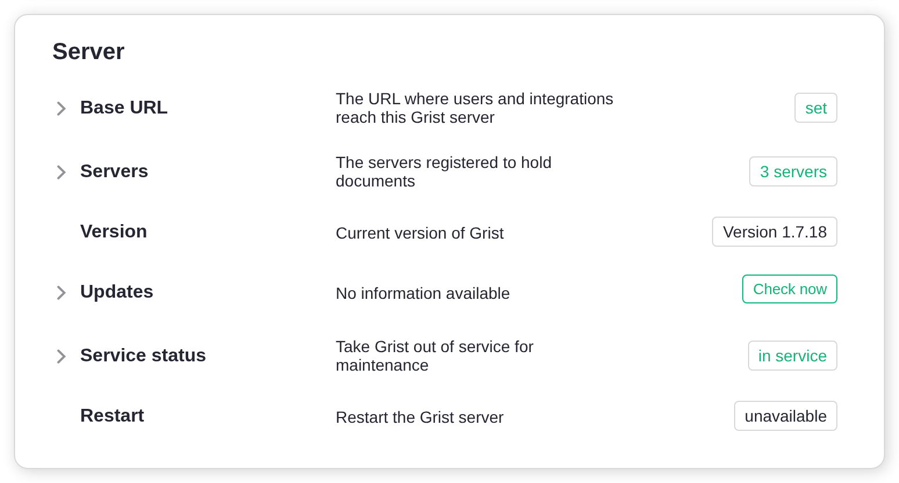
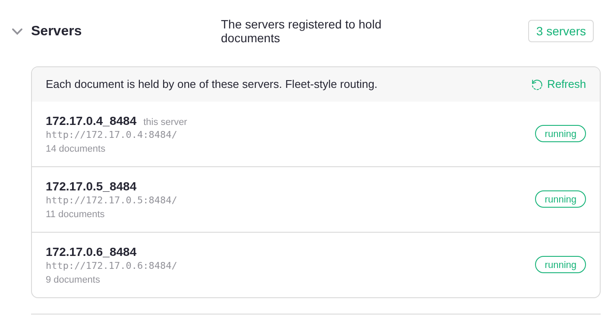
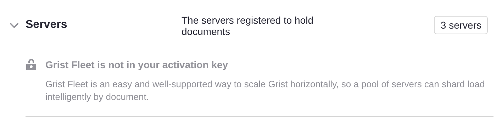
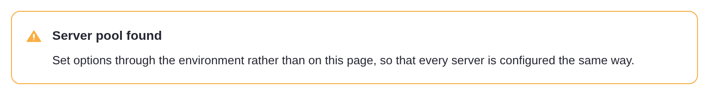
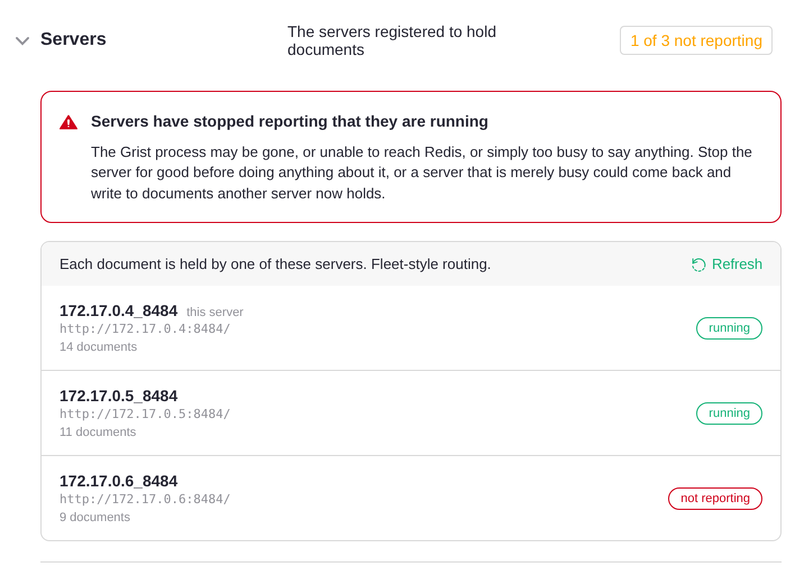

Grist Fleet#
Grist Fleet lets you run several Grist servers as a single installation. Every server in a fleet is identical: the same image, the same configuration, and the same job. Any server can accept any request, so you can stick a fleet of them behind a standard load balancer and they’ll sort themselves out.
A Grist document is still served by exactly one server at a time. It is an open SQLite file with a live Python sandbox attached. What Fleet changes is how clients reach that server. When a request for a document arrives at a server that doesn’t hold that document, the server transparently proxies it to the server that does. The browser never knows the difference, so nothing has to keep track of which server holds which document.
This gives you:
- Growth by cloning. To add capacity, start another server with the same configuration. There are no separate server roles to provision.
- An easy setup path. If you already have traffic routed to a Grist server, you can add more without changing routing. Then, when you’re ready, add a standard load balancer in front: plain round-robin will do, with no sticky sessions and no per-server routing rules.
- Smoother upgrades. Restart one server at a time. Clients see a brief reconnect rather than an outage.
- Redundancy. Servers may be added and removed freely. If a server goes away, its documents are reassigned to a live server and loaded from shared storage.
Scaling Grist horizontally without fuss#
Fleet is aimed at teams who have been running Grist on a single server for a while and now want to scale out, or who want the assurance that they can when the time comes. Whether it helps depends on how concentrated your load is.
Fleet spreads load across documents. Each document is held by one server, so as you add servers your documents are divided between them. A heavy document then slows down the one server holding it rather than your whole installation. If your load is spread over many documents, and a few busy ones are currently making Grist sluggish for everyone, that is the problem Fleet solves.
Fleet does not make an individual document faster, except by removing contention. If nearly all of your load is one large, busy document, adding servers will not help much. That document still sits on a single server, and the rest of the fleet will be idle; all it gains is a server it no longer shares with everything else. A faster server, or profiling and optimizing the document itself, are the answers here.
Fleet buys operational simplicity, and it has costs:
An extra hop. A client that lands on a server which does not hold its document is proxied through that server for the life of the connection. Within a datacenter the added latency is negligible, but the proxying server does spend file descriptors and memory on the piped sockets.
No dedicated home servers. Every server serves both landing pages and documents. A server busy recalculating a heavy document will also be slower at serving landing pages and API calls for whichever users happen to land on it. Grist’s own hosted architecture separates these roles onto different machines to avoid exactly this; a fleet of identical servers does not.
You can separate them whenever you want to, with one setting. Give the servers
users arrive at GRIST_SERVERS=home,static, and the rest GRIST_SERVERS=docs.
Everything else stays as it is, GRIST_FLEET included, and documents are still
proxied, so the servers holding them still need no public address of their own.
If you are planning a large deployment from the outset rather than growing an existing one, talk to us, since a hand-organized multi-tier deployment may suit you better.
What you need#
An activation key with Fleet enabled#
Fleet is a feature of the full edition of Grist, and it must be specifically enabled on your activation key. This is not something you can switch on yourself: an ordinary full-edition activation key does not include it, and it is not part of the 30-day trial. Contact us to have Fleet added to your key.
Shared services#
Multiple servers must share state that a single-server installation usually keeps to itself. All three of the following are required, and every server must point at the same one:
| Component | What Grist uses it for | Single-server default |
|---|---|---|
| PostgreSQL | The home database: users, orgs, permissions, document metadata | SQLite on local disk |
| Redis | Document assignment between servers, sessions, permits | In memory, with sessions in SQLite on local disk |
| S3-compatible storage or Azure | Document storage | Local disk |
If you are moving an existing single-server installation to a fleet, migrate to these first, one at a time, and confirm the installation is healthy on a single server before adding a second.
A network the servers share#
Servers must be able to reach one another directly, not only through the address
your users arrive at. The official Docker images listen on every interface,
which is what this needs. If not using them, set GRIST_HOST=0.0.0.0.
Traffic between servers is plain http, as is usual inside a VPC or a container
network.
Setting up#
Configure every server#
Set up each server as you would a single server using the shared services above. Then give every server these same settings:
GRIST_FLEET=true
GRIST_ACTIVATION=<activation-key-with-fleet>
APP_HOME_URL=https://grist.example.com
GRIST_FLEETturns Fleet on.GRIST_ACTIVATIONis your activation key, which must have Fleet enabled.GRIST_ACTIVATION_FILEworks too.APP_HOME_URLis the address your users arrive at.
Nothing is set per server: no names, no addresses, no roles, and no list of the other servers. Each server works out a name and an address for itself and finds the others through Redis.
Where users arrive#
APP_HOME_URL can lead to one of the servers to begin with, with the rest behind
it. A load balancer in front is recommended, but it does not have to come first:
add one whenever you are ready and have APP_HOME_URL lead there instead, and
nothing else changes. See Adding a load balancer.
Settings to avoid#
Some settings are harmless on a single server but could cause problems across several.
GRIST_DISABLE_S3. Without external document storage, documents exist only
on the local disk of whichever server last held them, and cannot be picked up by
another server.
APP_DOC_URL. This gives a server a public address of its own, which a
fleet has no use for: clients are proxied on from whichever server they reach.
Setting it alongside GRIST_FLEET stops the server at startup rather than
sending server-to-server traffic back out through the front door.
A setting customized on one server but not the others. Every server serves
every user, so a difference between them shows up as behavior that changes from
one page load to the next. GRIST_SESSION_SECRET is the sharp case: a session
cookie signed with one value is not accepted by a server holding another, so
users are sent back to sign in as they move around the fleet. The Admin Panel is
no help here: some of its settings apply only to the server you are talking to,
and others are picked up by the rest only when they restart. Configure a fleet
through each server’s environment instead.
The same GRIST_DOC_WORKER_ID on more than one server. A server’s name is
how the fleet decides which server holds a document. Two servers answering to
one name can end up opening the same document at once, each with its own copy of
it in memory. Nothing detects this, so it shows up as edits going missing.
Copying an entire environment between servers is the usual way it happens; the
same goes for APP_DOC_INTERNAL_URL, which names a server too. Leave both unset
unless you have a reason not to, and Grist will give each server a name of its
own.
Keeping internal traffic inside your network#
Servers also make some requests to Grist’s own API. By default they send them to
APP_HOME_URL, the public address your users arrive at, so that traffic leaves
your network and comes back in. To keep it inside, set APP_HOME_INTERNAL_URL on
every server to an internal address that reaches Grist:
APP_HOME_INTERNAL_URL=http://grist-internal:8484
Any server in the fleet can answer these requests, so the address can be a single
server’s, such as http://grist1:8484. An internal load balancer in front of all
of them is better, since those requests then do not depend on one server being up.
Monitoring the servers#
The Admin Panel shows the servers making up your fleet. Open the Installation page and look at the Server card. Once a second server has joined, a Servers section appears there, just below Base URL, showing how many servers Grist knows about.

Click it to see the list. Each entry shows the name a server goes by, the address it publishes to the others, and how many documents it is holding. The server you are talking to is marked this server.

The line above the list says how documents reach these servers. Fleet-style
routing means they are proxied between servers, as described on this page.
Worker-pool routing means Fleet is not on for the server you are talking to;
check that GRIST_FLEET is set there.
Each server is marked with its state:
- running: it has said within the last few seconds that it is running.
- draining: registered and keeping the documents it holds, but taking no new ones. Normal while a server is shutting down.
- not reporting: it has not said it is running for far longer than it should. See A server is not reporting.
The list is read when the page loads and is not kept up to date after that. Press Refresh to see servers that have joined or stopped since.
Listing the servers requires an activation key that includes Fleet. Without one you still see how many servers there are, along with a note that your key does not include Fleet.

Whenever there is more than one server, a reminder also appears at the top of the page to configure servers through the environment.

From a script#
GET /api/admin/servers returns the same list as the panel, for monitoring or
scripts. It needs an installation admin’s API key, and an
activation key that includes Fleet; without Fleet it answers 403.
curl -H "Authorization: Bearer <api-key>" https://grist.example.com/api/admin/servers
{
"kind": "fleet",
"serverCount": 3,
"selfRegistered": true,
"servers": [
{
"id": "172.17.0.4_8484",
"internalUrl": "http://172.17.0.4:8484/",
"available": true,
"alive": true,
"documentCount": 14,
"self": true
},
...
],
"fleet": { "included": true, "active": true }
}
For each server, alive is false when it is not reporting, and available
is false while it is draining.
Running a fleet#
Adding and removing servers#
Adding a server. Start a new server with the same configuration as the others. It registers itself in Redis, and new documents will be assigned to it. Documents already open elsewhere stay where they are until they are closed and reopened.
Removing a server. Stop it. Its documents are released and picked up by other servers when next opened.
Rolling upgrades#
Restart one server at a time, waiting for each to come back before moving to the next. Clients using a document on the restarting server reconnect, and the document is picked up by a live server and loaded from shared storage.
Without a load balancer, restarting the server your users arrive at interrupts everyone until it is back, so leave that one until last. A load balancer makes the whole upgrade invisible.
When a server fails#
A server that dies without shutting down cleanly keeps hold of its documents, and they cannot be opened until they are freed. That happens the next time someone loads one of them in their browser, if the dead server cannot be reached at all, for example because the connection is refused or its address no longer resolves. All of its documents are then freed, and each is loaded from shared storage by a live server when next opened. Edits made just before it died may be lost.
A server that simply stops answering is not treated as dead, since it may only be stalled. Its documents stay with it, and the Admin Panel shows it as not reporting. Starting a server again at the same address recovers them.
Without a load balancer, the server your users arrive at is the exception: while it is down, nobody can reach the installation. See Adding a load balancer.
Adding a load balancer#
A load balancer is the recommended arrangement. Pointing your users at one server works, and is a fine place to start, but it has two costs. The server your users arrive at handles every landing page and proxies every document it does not hold, so it is the busiest member of the fleet; and if it stops, the installation is unreachable even though the other servers are running.
A load balancer solves both, by spreading arrivals over the fleet and by not
sending traffic to a server that has stopped answering. Plain round-robin is
what Fleet is for: you do not need sticky sessions, and you do not need to route
on the document ID. Point APP_HOME_URL at the load balancer rather than at a
member. (DNS round-robin over the members sits between the two arrangements:
arrivals are spread, but clients keep trying an address that no longer answers.)
There are a couple of things to get right.
Forward WebSocket upgrades. Grist’s live collaboration runs over WebSockets, with Engine.IO long polling as a fallback. Both need to pass through.
Clear the x-grist-proxied header on incoming client requests. Grist sets
this header internally to guard against forwarding loops. A client sending it
achieves nothing, so this is optional defense in depth.
Here is an nginx configuration covering both. grist1, grist2 and grist3
are the hostnames of your Grist servers: container names, DNS names or IP
addresses, whatever your network uses to reach them. (grist_fleet is just
nginx’s name for the group, and can be anything.)
map $http_upgrade $connection_upgrade {
default upgrade;
"" close;
}
upstream grist_fleet {
server grist1:8484;
server grist2:8484;
server grist3:8484;
}
server {
listen 80;
location / {
proxy_pass http://grist_fleet;
proxy_http_version 1.1;
# Clear the loop guard; Grist sets it itself when forwarding.
proxy_set_header x-grist-proxied "";
# Required: WebSocket upgrade and the long-polling fallback.
proxy_set_header Upgrade $http_upgrade;
proxy_set_header Connection $connection_upgrade;
proxy_set_header Host $host;
proxy_set_header X-Forwarded-For $proxy_add_x_forwarded_for;
proxy_set_header X-Forwarded-Proto $scheme;
}
}
Note that nginx resolves upstream hostnames once, when it loads its configuration. If you restart a server and it comes back with a different IP address, as containers routinely do, nginx will quietly stop sending it traffic until nginx itself is reloaded.
Troubleshooting#
A server is not reporting#
The Servers section shows how many servers are not reporting, as in 1 of 3 not reporting.

The server may have stopped, lost its connection to Redis, or be too busy to report. Its documents may not open until it recovers or is replaced. See When a server fails.
Documents on one server won’t open#
If documents will not open while one particular server holds them, even though the Admin Panel’s Servers section shows that server as running, the likely cause is that the other servers cannot reach the address it published.
Each server works out its own address, so there is normally nothing to set.
Given GRIST_HOST=0.0.0.0, as in the official Docker images, it advertises its
own IP address on the network it uses to reach Redis, and takes its name from
that address, which is why servers appear as 172.17.0.4_8484 and the like.
Set DEBUG=1 to see what each server chose:
== docWorkerId: 172.17.0.4_8484
== docWorkerInternalUrl: http://172.17.0.4:8484/
== docWorkerAddressSource: redis
docWorkerAddressSource is redis in the usual case, GRIST_HOST where that
named a single address, APP_DOC_INTERNAL_URL where you gave one, and none
where nothing did. Check that each server has a different docWorkerId, and
that the internal URLs are addresses the other servers can reach. Two things
commonly go wrong:
-
No address. With
GRIST_HOSTunset, a server listens onlocalhostalone, where nothing else can reach it. It warns about this at startup:DocWorker grist1_8484 has no address peers can reach, so published http://localhost:8484/. Set GRIST_HOST=0.0.0.0 to listen on every interface, or APP_DOC_INTERNAL_URL to name an address. -
The wrong address. If Redis is reached over loopback, or through something alongside the server such as a TLS proxy or a service mesh, the address picked up belongs to that neighbor rather than to the server.
Either way, name the address yourself:
# The URL at which other servers can reach this one. Not public; this is
# server-to-server traffic inside your network.
APP_DOC_INTERNAL_URL=http://grist1:8484
# A name for this server, distinct from every other. Derived from the URL
# above when left unset.
GRIST_DOC_WORKER_ID=grist1
Internal URLs must use http://, not https://: server-to-server proxy
connections do not currently support TLS.